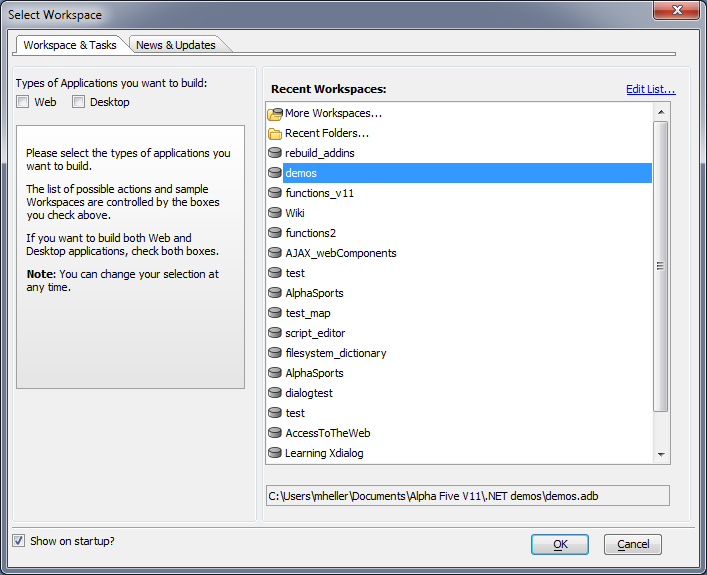
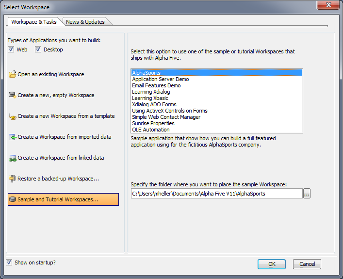
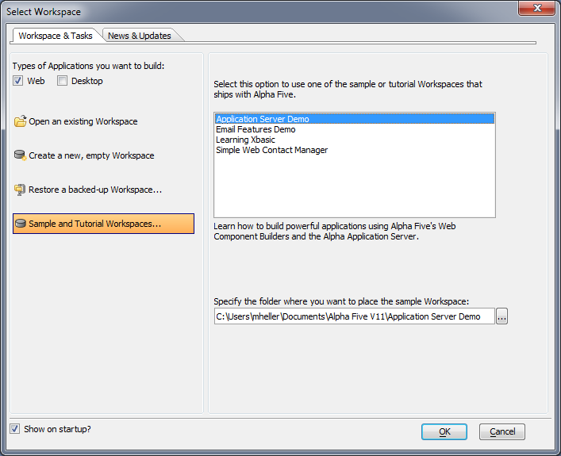

Workspace application types
On the Alpha Software message board, we have long segregated questions about Web development into different forums than questions about desktop development, primarily to avoid confusion. Now that we're hearing from many of our customers that they only do Web development and rarely use Alpha Anywhere's desktop functionality, we've made it easy to simplify your user interface in the Alpha Anywhere development environment.When opening Alpha Anywhere, you will see a new dialog asking you what kind of applications you plan to build. Note that you can change this selection at any time.

If you check both boxes, you'll see all options, just as you used to:

If you check only the Web box, we won't show you the desktop-only sample Workpaces:

This choice carries through the development environment menus. You can change this setting at any time.